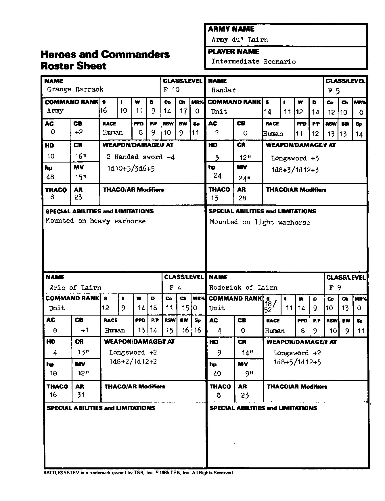

莱恩军 Army du’Lairn：英雄与指挥官
能力值顺序：力量／智力／感知／敏捷／体质／魅力。五项豁免依次为麻痹·毒素·死亡魔法／石化·变形／法杖·法棒·魔杖／吐息／法术。移动与指挥半径以桌面英寸计；“—”表示原卡空白或不适用。武器两种伤害分别针对 S/M 与 L 目标；特殊多次攻击另行注明。
格兰奇·拉拉克 Grange Rarrack
| 项目 | 数值 |
|---|---|
| 职业／等级 | 战士 10 |
| 指挥职级 | 军队 |
| 六项能力值 | 16/10/11/9/14/17 |
| 种族 | 人类 |
| 魔法抗性 MR | 0% |
| 护甲等级 AC | 0 |
| 指挥加值 CB | 2 |
| 五项豁免 | 8/9/10/9/11 |
| 生命骰 HD | 10 |
| 指挥半径 CR | 16 |
| 生命值 hp | 48 |
| 移动率 MV | 15 |
| THAC0 | 8 |
| 攻击等级 AR | 23 |
| 武器／伤害／攻击次数 | 双手剑 +4；1d10+5／3d6+5 |
| 特殊能力、限制与准备法术 | 骑重型战马。 |
兰达 Randar
| 项目 | 数值 |
|---|---|
| 职业／等级 | 战士 5 |
| 指挥职级 | 部队 |
| 六项能力值 | 14/11/12/14/12/10 |
| 种族 | 人类 |
| 魔法抗性 MR | 0% |
| 护甲等级 AC | 7 |
| 指挥加值 CB | 0 |
| 五项豁免 | 11/12/13/13/14 |
| 生命骰 HD | 5 |
| 指挥半径 CR | 12 |
| 生命值 hp | 24 |
| 移动率 MV | 24 |
| THAC0 | 13 |
| 攻击等级 AR | 28 |
| 武器／伤害／攻击次数 | 长剑 +3；1d8+3／1d12+3 |
| 特殊能力、限制与准备法术 | 骑轻型战马。 |
莱恩的埃里克 Eric of Lairn
| 项目 | 数值 |
|---|---|
| 职业／等级 | 战士 4 |
| 指挥职级 | 部队 |
| 六项能力值 | 12/9/14/16/11/15 |
| 种族 | 人类 |
| 魔法抗性 MR | 0% |
| 护甲等级 AC | 8 |
| 指挥加值 CB | 1 |
| 五项豁免 | 13/14/15/16/16 |
| 生命骰 HD | 4 |
| 指挥半径 CR | 13 |
| 生命值 hp | 18 |
| 移动率 MV | 12 |
| THAC0 | 16 |
| 攻击等级 AR | 31 |
| 武器／伤害／攻击次数 | 长剑 +2；1d8+2／1d12+2 |
| 特殊能力、限制与准备法术 | — |
莱恩的罗德里克 Roderick of Lairn
| 项目 | 数值 |
|---|---|
| 职业／等级 | 战士 9 |
| 指挥职级 | 部队 |
| 六项能力值 | 力 18/52；智 11；感 14；敏 9；体 10；魅 13 |
| 种族 | 人类 |
| 魔法抗性 MR | 0% |
| 护甲等级 AC | 4 |
| 指挥加值 CB | 0 |
| 五项豁免 | 8/9/10/9/11 |
| 生命骰 HD | 9 |
| 指挥半径 CR | 14 |
| 生命值 hp | 40 |
| 移动率 MV | 9 |
| THAC0 | 8 |
| 攻击等级 AR | 23 |
| 武器／伤害／攻击次数 | 长剑 +2；1d8+5／1d12+5 |
| 特殊能力、限制与准备法术 | — |
兵力卡原图
